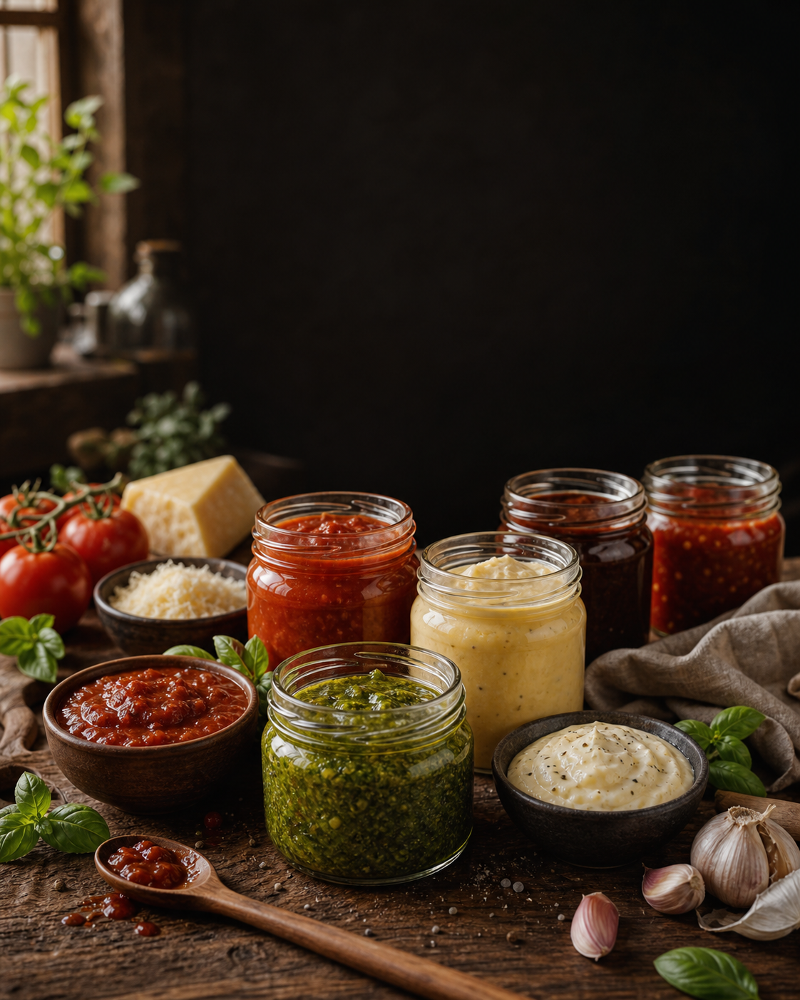
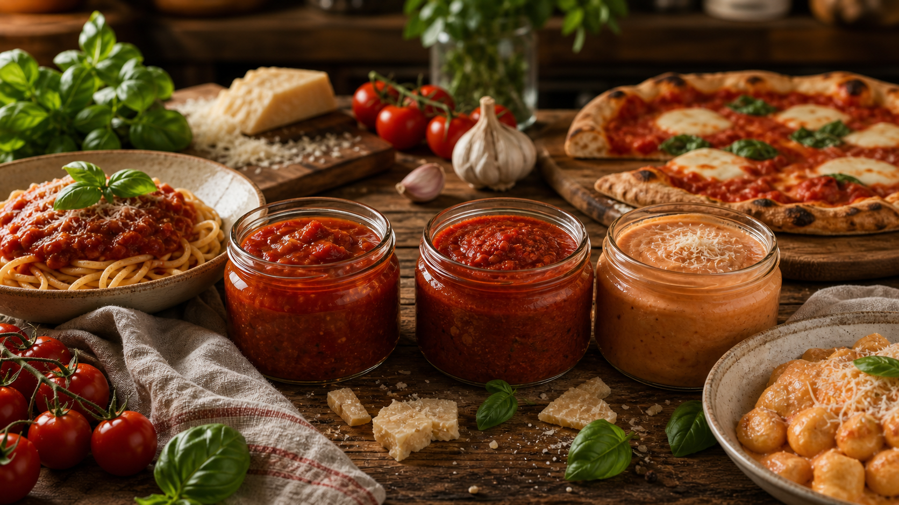
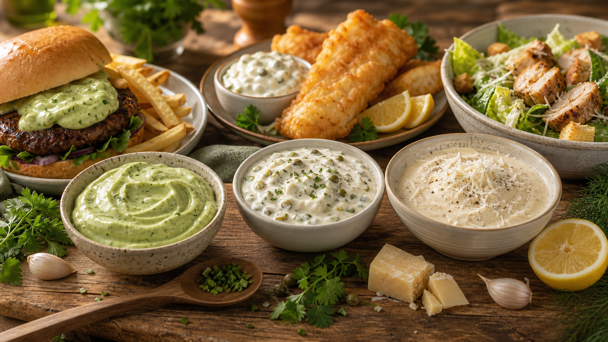
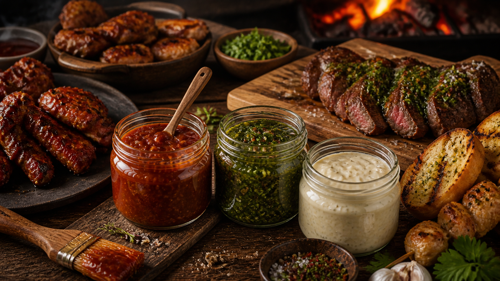
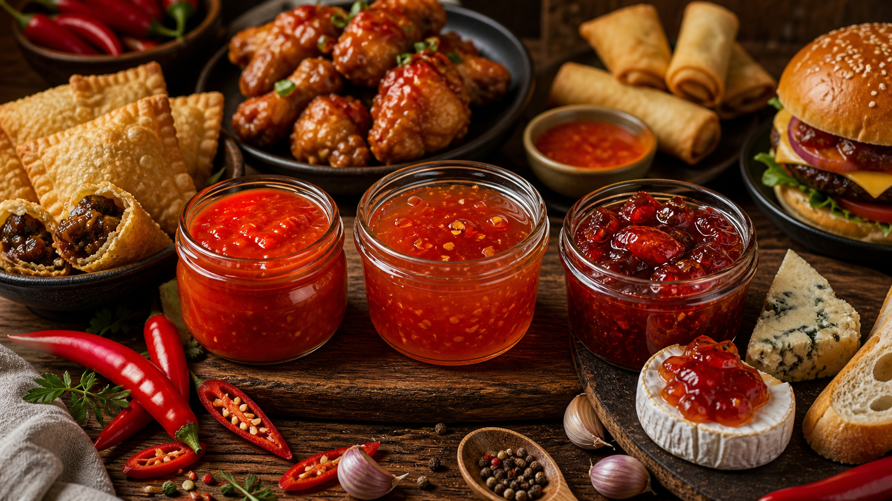
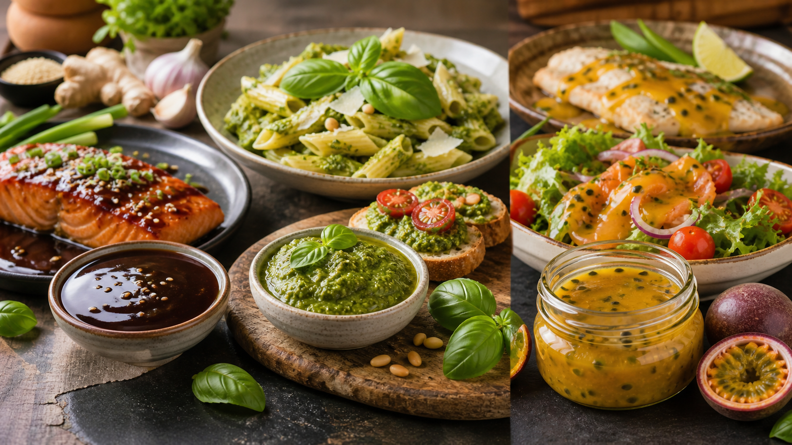

Bases dos molhos mais procurados
Entenda os tipos de molhos usados em churrascos, massas, hambúrgueres, petiscos e pratos do dia a dia.

Segredos dos Molhos Artesanais
Mesmo que você nunca tenha vendido comida antes, não tenha equipamentos profissionais e queira começar pequeno, direto da sua casa.
Acesso imediato • Pagamento único • 7 dias de garantia
A oportunidade
Muita gente tenta vender comida começando por pratos complexos, estrutura cara e cardápios enormes. O caminho dos molhos é mais simples: você cria sabor, identidade e valor percebido em potes pequenos, usando ingredientes acessíveis e uma cozinha comum.
Um bom molho melhora hambúrguer, massa, churrasco, marmita, petisco e salada. E quando ele tem aparência bonita, sabor marcante e aplicação clara, fica muito mais fácil vender em kits, combos e adicionais.

Como o método funciona
O “Segredos dos Molhos Artesanais” não é apenas um livro de receitas. Ele organiza o processo para você entender a base, preparar com padrão, aplicar em pratos reais e vender com mais segurança.
Entenda os tipos de molhos usados em churrascos, massas, hambúrgueres, petiscos e pratos do dia a dia.
Receitas práticas, acessíveis e feitas para funcionar em cozinhas comuns, sem equipamento profissional.
Comece pequeno, teste aceitação, controle rendimento e reduza perdas antes de produzir em maior volume.
Descubra onde cada molho entra para aumentar sabor, apresentação e valor percebido dos pratos.
Veja noções de envase, armazenamento, combos, precificação e formas simples de oferta.
Organize custos, margem, preço de venda e kits para decidir com clareza antes de vender.
Prova visual
Os molhos foram organizados por segmentos de consumo: massas, queijos, cremes frios, churrasco, pimentas, saladas e orientais. Isso ajuda você a escolher o que produzir conforme o público e o prato que deseja vender.



Para quem é
A proposta é começar com utensílios básicos, ingredientes acessíveis e lotes pequenos. Primeiro você aprende a fazer bem. Depois entende custo, preço, aplicação e formas de vender.
O que você recebe
50 receitas práticas para massas, hambúrgueres, churrascos, saladas, petiscos, marmitas e lanches artesanais.
Calcule custo, preço de venda, margem de lucro, kits e combos para evitar prejuízo e vender com mais segurança.
Comparativo
Oferta especial
Você recebe o e-book completo com 50 receitas, o método de produção artesanal e a planilha bônus para organizar custos, preços e combos.
Autoridade
O método foi construído com base em experiência prática real dentro da gastronomia: criação de cardápios, desenvolvimento de produtos autorais, processos de cozinha e produção artesanal com foco em qualidade e rentabilidade.
Depois de atuar como dono de restaurantes e desenvolver inúmeros pratos e produtos, Bruno Cavalcanti criou este material para mostrar que ingredientes simples podem virar produtos premium com técnica, organização e inteligência.

Objeções respondidas
Você pode começar com utensílios básicos, ingredientes acessíveis e pequenos lotes dentro da própria cozinha.
O método foi criado para iniciantes. As receitas seguem uma lógica simples, prática e reproduzível.
Você não precisa de cozinha industrial para começar. A proposta é produção artesanal em cozinha comum.
A planilha bônus ajuda a organizar custos, margem e preço de venda com mais clareza.
Perguntas frequentes
Sim. O e-book ensina boas práticas de armazenamento, envase e acondicionamento, sempre com orientação prudente para produção artesanal.
Sim. O método foi pensado para produção artesanal em cozinhas comuns, sem equipamentos profissionais.
Não. O material foi criado para iniciantes e intermediários que querem aprender com um caminho organizado.
O material mostra segmentos com maior aceitação e ideias de kits, como churrasco, massas e lanches.
Sim. Após a compra, o acesso ao material digital deve ser liberado automaticamente pela plataforma de checkout utilizada.
Sim. Você tem 7 dias de garantia para solicitar reembolso se entender que o material não é para você.
Comece hoje
Acesse agora o “Segredos dos Molhos Artesanais” por apenas R$67,77 e comece a transformar ingredientes simples em produtos com aparência profissional.
Acesso imediato • Bônus incluso • 7 dias de garantia